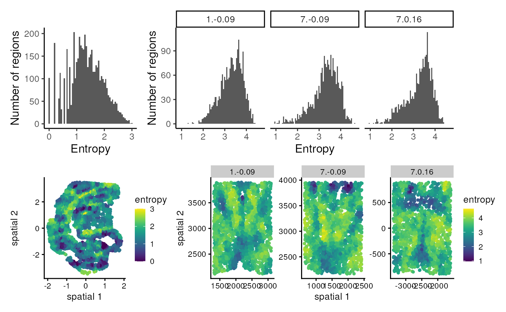

vignettes/clustSIGNAL_tutorial.Rmd
clustSIGNAL_tutorial.RmdPresenter
Pratibha Panwar
School of Mathematics and Statistics, University of Sydney,
Australia
Sydney Precision Data Science Centre, University of Sydney,
Australia
Charles Perkins Centre, University of Sydney, Australia
Contact: pratibha.panwar@sydney.edu.au
In this RStudio instance, we will cover the remaining tasks.
# you do not need to run this chunk
# the packages are already installed in this instance
# install from CRAN
# install.packages(c("Seurat", "aricode", "dplyr", "ggplot2", "patchwork"))
# install from github
# install.packages("devtools")
# devtools::install_github("SydneyBioX/clustSIGNAL")For this tutorial, we will use sampled data from two publicly available datasets - (i) a subsample from the SeqFISH mouse embryo dataset from Lohoff et al, 2021, and (ii) a subsample from the MERFISH mouse hypothalamus preoptic region dataset from Moffitt et al, 2018
The SeqFISH mouse embryo dataset contains gene expression data for 3 mouse embryos, with 351 genes and a total of 57,536 cells. Here, we use a subset data of 5000 randomly selected cells from Embryo 2, excluding cells that had been annotated as ‘Low quality’.
The MERFISH mouse hypothalamus preoptic region dataset contains gene expression for 181 samples, with 155 genes and a total of 1,027,080 cells. Here, we use a subset data of 6000 cells randomly selected from only 3 samples - Animal 1 Bregma -0.09 (2080 cells), Animal 7 Bregma 0.16 (1936 cells), and Animal 7 Bregma -0.09 (1984 cells), excluding cells that had been annotated as ‘ambiguous’ and 20 genes that were assessed using a different technology.
These sampled datasets are available with clustSIGNAL package and can be accessed as below:
data(mEmbryo2)
# this will load me_expr and me_data objects, containing gene expression
# logcounts and cell metadata, respectively, to your environment
data(mHypothal)
# this will load mh_expr and mh_data objects, containing gene expression
# logcounts and cell metadata, respectively, to your environmentclustSIGNAL requires a SpatialExperiment (spe) object as input, so first we need to create a spe object from the gene expression and cell metadata we have in our environment.
The gene expression data is in a gene by cell matrix. The cell metadata is a dataframe of cell characteristics, including the x-y coordinates of each cell.
Let us work with the MERFISH data first, by creating a spe object from the data.
# to create spe object we need gene expression, cell metadata, and cell location
spe_mh <- SpatialExperiment(assays = list(logcounts = mh_expr),
colData = mh_data,
# spatialCoordsNames requires column names in
# mh_data that contain xy-coordinates of cells
spatialCoordsNames = c("X", "Y"))
spe_mh#> class: SpatialExperiment
#> dim: 135 6000
#> metadata(0):
#> assays(1): logcounts
#> rownames(135): Ace2 Adora2a ... Ttn Ttyh2
#> rowData names(0):
#> colnames(6000): 74d3f69d-e8f2-4c33-a8ca-fac3eb65e55a
#> 41158ddc-e70c-487b-b891-0cb3c8452555 ...
#> 54145623-7071-482c-b9da-d0d2dd31274a
#> 96bc85ce-b993-4fb1-8e0c-165f83f0cfd0
#> colData names(4): Cell_ID Cell_class sample_id samples
#> reducedDimNames(0):
#> mainExpName: NULL
#> altExpNames(0):
#> spatialCoords names(2) : X Y
#> imgData names(0):Some components of the spe object that are frequently used include assays (the gene expression data are stored here - multiple assays can be stored in one spe object), colData (the cell characteristics are stored here), rowData (the gene characteristics can be stored here), spatialCoords (the x-y coordinates of each cell are stored here), reducedDims (any low embeddings data can be stored here), and imgData (any images from the data can be stored here).
ClustSIGNAL comes with many parameters that can be explored. Most of these parameters have default values and do not need to be specified when running the method, except three parameters that need input. These include the spe object, the colData column name containing sample names, and the colData column name containing cell IDs. Moreover, the spe object must have logcounts stored in assays section and cell locations stored in the spatialCoords section.
Since we created the spe object earlier, we know that the logcounts and spatial coordinates are stored in the spe object. We can confirm this by just looking at the spe object.
spe_mh#> class: SpatialExperiment
#> dim: 135 6000
#> metadata(0):
#> assays(1): logcounts
#> rownames(135): Ace2 Adora2a ... Ttn Ttyh2
#> rowData names(0):
#> colnames(6000): 74d3f69d-e8f2-4c33-a8ca-fac3eb65e55a
#> 41158ddc-e70c-487b-b891-0cb3c8452555 ...
#> 54145623-7071-482c-b9da-d0d2dd31274a
#> 96bc85ce-b993-4fb1-8e0c-165f83f0cfd0
#> colData names(4): Cell_ID Cell_class sample_id samples
#> reducedDimNames(0):
#> mainExpName: NULL
#> altExpNames(0):
#> spatialCoords names(2) : X Y
#> imgData names(0):Now, let us identify the column names containing cell IDs and sample names so we can use them for running clustSIGNAL.
spe_mh |> colData() |> head()#> DataFrame with 6 rows and 4 columns
#> Cell_ID Cell_class
#> <character> <character>
#> 74d3f69d-e8f2-4c33-a8ca-fac3eb65e55a 74d3f69d-e8f2-4c33-a.. Endothelial 1
#> 41158ddc-e70c-487b-b891-0cb3c8452555 41158ddc-e70c-487b-b.. Endothelial 1
#> 46ba8016-2c4f-4ef0-84c9-3ee3951afdfd 46ba8016-2c4f-4ef0-8.. Pericytes
#> ac9f1af8-8b03-4b2f-b29c-929ae2b240dc ac9f1af8-8b03-4b2f-b.. Astrocyte
#> aadbdab4-a477-46b2-8e58-3ffd071910aa aadbdab4-a477-46b2-8.. Astrocyte
#> 260346eb-9a9b-4663-aa88-7a2d44bb3bef 260346eb-9a9b-4663-a.. Inhibitory
#> sample_id samples
#> <character> <factor>
#> 74d3f69d-e8f2-4c33-a8ca-fac3eb65e55a sample01 1.-0.09
#> 41158ddc-e70c-487b-b891-0cb3c8452555 sample01 1.-0.09
#> 46ba8016-2c4f-4ef0-84c9-3ee3951afdfd sample01 1.-0.09
#> ac9f1af8-8b03-4b2f-b29c-929ae2b240dc sample01 1.-0.09
#> aadbdab4-a477-46b2-8e58-3ffd071910aa sample01 1.-0.09
#> 260346eb-9a9b-4663-aa88-7a2d44bb3bef sample01 1.-0.09Here, the cell IDs are in the column named “Cell_ID” and the samples are in the “samples” column.
Now that we have the column names, and the spe object contains the relevant information, we can run clustSIGNAL with some default values. Here, clustSIGNAL will be run on the input spe object, with cell ID and sample names specified by the column names in samples and cells respectively. Keeping outputs = “a” will get us the final spe object as well as the dataframe of cluster numbers.
Feel free to explore the data by modifying the input parameters. The dimRed parameter allows the use of specific low embeddings in the spe object for generation of the initial clusters. The batch and batch_by parameters can be used to specify whether to perform batch correction and what sample groups to use. By default, clustSIGNAL uses information from 30 nearest neighbours, but this can be modified by changing the value of the NN parameter. To change the weights used for adaptive smoothing, the kernel and spread parameters that control the type and spread of distribution, respectively, can be modified. Clustering parameters can be explored using the clustParams parameter list.
set.seed(110)
smp_label <- "samples" # column name containing sample names
c_label <- "Cell_ID" # column name containing cell IDs
res_mh <- clustSIGNAL(spe_mh, samples = smp_label, cells = c_label,
outputs = "a")#> [1] "Calculating PCA. Time 04:25:54"
#> [1] "clustSIGNAL run started. Time 04:25:54"
#> [1] "Initial nonspatial clustering performed. Clusters = 11 Time 04:25:56"#> [1] "Nonspatial subclustering performed. Subclusters = 52 Time 04:25:57"
#> [1] "Regions defined. Time 04:26:00"
#> [1] "Region domainness calculated. Time 04:26:00"
#> [1] "Smoothing performed. NN = 30 Kernel = G Spread = 0.05 Time 04:26:39"
#> [1] "Nonspatial clustering performed on smoothed data. Clusters = 11 Time 04:26:41"
#> [1] "clustSIGNAL run completed. 04:26:41"
#> Time difference of 47.32858 secsSince, we selected all output option, clustSIGNAL returns a list including a dataframe of cluster numbers and a spe object.
res_mh |> names()#> [1] "clusters" "spe_final"The resulting spe object contains the adaptively smoothed gene expression data as an additional assay, initial clusters, entropy values, and clustSIGNAL clusters. Essentiallu, the final spe object contains data from the input spe object plus the outputs from the clustSIGNAL run.
res_mh$spe_final#> class: SpatialExperiment
#> dim: 135 6000
#> metadata(0):
#> assays(2): logcounts smoothed
#> rownames(135): Ace2 Adora2a ... Ttn Ttyh2
#> rowData names(0):
#> colnames(6000): 74d3f69d-e8f2-4c33-a8ca-fac3eb65e55a
#> 41158ddc-e70c-487b-b891-0cb3c8452555 ...
#> 54145623-7071-482c-b9da-d0d2dd31274a
#> 96bc85ce-b993-4fb1-8e0c-165f83f0cfd0
#> colData names(8): Cell_ID Cell_class ... entropy clustSIGNAL
#> reducedDimNames(2): PCA PCA.smooth
#> mainExpName: NULL
#> altExpNames(0):
#> spatialCoords names(2) : X Y
#> imgData names(1): sample_id
spe_mh <- res_mh$spe_finalIn this section, we will analyse the results from clustSIGNAL through clustering metrics and visualisation.
Clustering metrics such as ARI (adjusted rand index) and NMI (normalised mutual information) allow us to compare clustering performed by two methods. Here, we use ARI and NMI to compare clustSIGNAL clusters with published annotations - higher values mean more consensus between the two groups.
samplesList <- spe_mh[[smp_label]] |> unique() # get unique sample names
spe_mh |> colData() %>%
as.data.frame() %>%
group_by(get(smp_label)) %>%
# group cells by samples and for cells in each sample
# calculate the following metrics
summarise(ARI = aricode::ARI(Cell_class, clustSIGNAL), # calculate ARI
NMI = aricode::NMI(Cell_class, clustSIGNAL), # calculate NMI
min_Entropy = min(entropy), # calculate minimum entropy
max_Entropy = max(entropy), # calculate minimum entropy
mean_Entropy = mean(entropy)) # calculate minimum entropy#> # A tibble: 3 × 6
#> `get(smp_label)` ARI NMI min_Entropy max_Entropy mean_Entropy
#> <fct> <dbl> <dbl> <dbl> <dbl> <dbl>
#> 1 1.-0.09 0.445 0.624 1.32 4.42 3.30
#> 2 7.-0.09 0.511 0.679 0.970 4.64 3.30
#> 3 7.0.16 0.645 0.744 0.970 4.42 3.26The clustering output can also be visualised by plotting the spatial coordinates of cells and colouring by cluster numbers. Here, we use the plotReducedDim function from the scater R package for creating spatial plots. This requires the spatial coordinates to be added to the reducedDimension section of the spe object.
# add the spatial coordinates to the reduced dimension section
# for plotting with scater package
reducedDim(spe_mh, "spatial") <- spatialCoords(spe_mh)To specify that we want to create spatial plots, we just specify the low embedding name in dimred option, in this case it is “spatial”.
p1 <- scater::plotReducedDim(spe_mh,
# specify spatial low dimension
dimred = "spatial",
colour_by = "clustSIGNAL",
point_alpha = 1,
point_size = 1) +
# to separate out the 3 samples in the dataset
facet_wrap(vars(spe_mh[[smp_label]]), scales = "free")
p1Here, the x and y axes are the x-y coordinates of the cells. The dataset contains 3 samples, so we have one plot per sample. ClustSIGNAL performs clustering using all cells in the dataset in one run, thereby identifying the same clusters across multiple samples in the dataset.
We can also compare the clustering output with the annotated labels to assess how much of the manual annotation was captured by the method output.
table(spe_mh$Cell_class, spe_mh$clustSIGNAL)#>
#> 1 2 3 4 5 6 7 8 9 10 11
#> Astrocyte 2 1 0 634 0 2 1 9 0 0 8
#> Endothelial 1 1 1 0 0 1 0 0 0 0 0 300
#> Endothelial 2 3 0 2 1 0 1 0 4 0 0 20
#> Endothelial 3 4 1 0 2 0 1 1 0 0 0 113
#> Ependymal 0 0 0 1 0 0 0 223 0 0 0
#> Excitatory 49 2 33 7 30 986 0 0 0 89 0
#> Inhibitory 875 2 792 12 598 95 1 2 2 3 0
#> Microglia 4 15 0 2 1 1 110 0 0 0 11
#> OD Immature 1 1 0 2 11 0 2 2 0 201 0 0
#> OD Immature 2 2 0 1 4 0 0 0 0 7 1 1
#> OD Mature 1 0 118 0 1 0 0 0 0 1 0 1
#> OD Mature 2 0 496 0 2 0 0 0 0 0 0 0
#> OD Mature 3 1 8 1 1 0 0 0 0 0 0 0
#> OD Mature 4 0 41 0 3 0 0 0 0 0 0 1
#> Pericytes 3 0 0 1 0 0 0 0 0 0 27In this table, the rows show published manual annotations and columns show clustSIGNAL cluster labels. ClustSIGNAL is able to capture the distinct cell types and also identify subgroups in some cases - inhibitory and excitatory neurons.
To assess how distinct these clusters are, we investigate the top marker genes in each cluster using the FindAllMarkers function in Seurat R package.
# we can convert the spe object into a Seurat (seu) object as below
# since we do not have counts data, we've used logcounts as
# counts to be able to create the seu object
seu_mh <- Seurat::as.Seurat(spe_mh, data = NULL, counts = "logcounts")
seu_mh#> An object of class Seurat
#> 135 features across 6000 samples within 1 assay
#> Active assay: originalexp (135 features, 0 variable features)
#> 2 layers present: counts, data
#> 3 dimensional reductions calculated: PCA, PCA.smooth, spatialSince we’ve used the logcounts as counts in this seu object, the two assay layers - counts and data - contain the same information. For finding cluster markers, we will use default values, which includes using the data layer containing logcounts.
# to specify that the cluster number information is in clustSIGNAL column
Idents(seu_mh) <- "clustSIGNAL"
# this will identify marker genes in each cluster using default values
markers_mh <- Seurat::FindAllMarkers(seu_mh)We can now plot the top marker genes and their gene expression in each cell to see how distinct each cluster is.
# here we select the top 10 markers genes (with log fold change > 0.5)
# from each cluster, but you can modify the parameters to select
# more/less genes with higher/lower fold change
top10 <- markers_mh %>%
group_by(cluster) %>%
dplyr::filter(avg_log2FC > 0.5) %>%
slice_head(n = 10) %>%
ungroup()
# plotting the heatmap for top 10 marker genes using their logcounts ("data")
Seurat::DoHeatmap(seu_mh, slot = "data", features = top10$gene) + NoLegend()Here, the genes are shown along the y-axis and the cells, grouped by the cluster they belong to, are displayed along the x-axis. The values in the heatmap are logcounts of top 10 marker genes in each cluster.
Other than the cluster labels, clustSIGNAL also generates smoothed gene expression, initial cluster labels, and cell neihbourhood-specific entropy values. Other outputs such as nearest neighbour matrix, and initial cluster based neighbourhood compositions are also accessible by running clustSIGNAL functions sequentially.
The p1_clustering function generates the initial cluster labels and adds them to the spe object, the neighbourDetect function produces nearest neighbour matrix and neighbourhood compositions, the entropyMeasure function adds entropy values to the spe object, the adaptiveSmoothing function adds smoothed gene expression to the spe object, and the p2_clustering function generates the final clusters and adds them to the spe object.
Of these additional outputs, the entropy values can be valuable in exploring datasets to get a sense of the neighbourhood compositions of the cells, essentially revealing gene expression based tissue structure. Let us explore this with the two datasets available to us. First, we need to run clustSIGNAL on the seqFISH dataset to generate the appropriate data.
# to create spe object we need gene expression, cell metadata, and cell location
spe_me <- SpatialExperiment(assays = list(logcounts = me_expr),
colData = me_data,
# spatialCoordsNames requires column names in
# me_data that contain xy-coordinates of cells
spatialCoordsNames = c("X", "Y"))
reducedDim(spe_me, "spatial") <- spatialCoords(spe_me)
set.seed(110)
# "sample_id" column contains sample names
# "uniqueID" column contains cell IDs
res_me <- clustSIGNAL(spe_me, samples = "sample_id", cells = "uniqueID",
outputs = "a")#> [1] "Calculating PCA. Time 04:27:03"
#> [1] "clustSIGNAL run started. Time 04:27:03"
#> [1] "Initial nonspatial clustering performed. Clusters = 11 Time 04:27:04"
#> [1] "Nonspatial subclustering performed. Subclusters = 47 Time 04:27:06"
#> [1] "Regions defined. Time 04:27:08"
#> [1] "Region domainness calculated. Time 04:27:08"
#> [1] "Smoothing performed. NN = 30 Kernel = G Spread = 0.05 Time 04:27:40"
#> [1] "Nonspatial clustering performed on smoothed data. Clusters = 15 Time 04:27:41"
#> [1] "clustSIGNAL run completed. 04:27:41"
#> Time difference of 38.11643 secs
spe_me <- res_me$spe_final
spe_me#> class: SpatialExperiment
#> dim: 351 5000
#> metadata(0):
#> assays(2): logcounts smoothed
#> rownames(351): Abcc4 Acp5 ... Zfp57 Zic3
#> rowData names(0):
#> colnames(5000): embryo2_Pos29_cell100_z2 embryo2_Pos29_cell101_z5 ...
#> embryo2_Pos50_cell97_z5 embryo2_Pos50_cell99_z5
#> colData names(8): uniqueID pos ... entropy clustSIGNAL
#> reducedDimNames(3): spatial PCA PCA.smooth
#> mainExpName: NULL
#> altExpNames(0):
#> spatialCoords names(2) : X Y
#> imgData names(1): sample_idTo explore the dataset, we can estimate the spread and distribution of the entropy values using histogram and spatial plots respectively.
# histogram plots to show entropy spread
h1 <- spe_me |> colData() |> as.data.frame() %>% # plotting embryo data
ggplot(aes(entropy)) +
geom_histogram(binwidth = 0.05) +
labs(x = "Entropy", y = "Number of regions") +
theme_classic() +
theme(text = element_text(size = 12))
h2 <- spe_mh |> colData() |> as.data.frame() %>% # plotting hypothalamus data
ggplot(aes(entropy)) +
geom_histogram(binwidth = 0.05) +
# separate out the 3 samples in the dataset
facet_wrap(vars(get(smp_label)), nrow = 1) +
labs(x = "Entropy", y = "Number of regions") +
theme_classic() +
theme(text = element_text(size = 12))
# spatial plots to show entropy distribution
s1 <- scater::plotReducedDim(spe_me, # plotting embryo data
# specify spatial low dimension
dimred = "spatial",
# specify colour points by entropy
colour_by = "entropy",
point_alpha = 1,
point_size = 1)
s2 <- scater::plotReducedDim(spe_mh, # plotting hypothalamus data
# specify spatial low dimension
dimred = "spatial",
# specify colour points by entropy
colour_by = "entropy",
point_alpha = 1,
point_size = 1) +
# to separate out the 3 samples in the dataset
facet_wrap(vars(spe_mh[[smp_label]]), scales = "free")
(h1 + h2) / (s1 + s2) + patchwork::plot_layout(widths = c(1, 3))
The entropy plots help us gauge the “domainness” in the samples. For example, the neighbourhood entropy values in the mouse embryo data can go as low as 0, which would mean that this sample has many neighbouhoods that are completely homogeneous and could represent domains composed of one celltype. The spatial plot helps visualise where in the sample such homogeneous regions might be found. On the contrary, the neighbourhood entropy values in the mouse hypothalamus data are generally quite high, with no regions that are completely homogeneous.
One thing to note is that these entropy values are based on 30 nearest neighbours in this example, and changing the NN parameter when running clustSIGNAL will generate different entropy values. Comparing entropy values from different neighbourhood sizes could be useful in estimating the size of the domain-like regions.
ClustSIGNAL is a method developed to counter data sparsity by performing an adaptive smoothing approach to generate new gene expression that is used for clustering.
The method comes with an ensemble of options that allow selection of neighbourhood, weighting, batch correction, and clustering parameters.
ClustSIGNAL can be run on datasets with mulitple samples and will identify clusters in all samples in one run.
ClustSIGNAL uses both gene expression and spatial information to generate clusters from subcellular spatial transcriptomics data by stabilising the expression of cells in homogeneous regions and preventing the loss of distinct expression of cells in more heterogeneous regions.
Neighbourhood entropy values generated by clustSIGNAL can be used for data exploration to estimate the extent of “domainness” in tissue samples.
#> R version 4.4.1 (2024-06-14)
#> Platform: x86_64-pc-linux-gnu
#> Running under: Ubuntu 22.04.5 LTS
#>
#> Matrix products: default
#> BLAS: /usr/lib/x86_64-linux-gnu/openblas-pthread/libblas.so.3
#> LAPACK: /usr/lib/x86_64-linux-gnu/openblas-pthread/libopenblasp-r0.3.20.so; LAPACK version 3.10.0
#>
#> locale:
#> [1] LC_CTYPE=en_US.UTF-8 LC_NUMERIC=C
#> [3] LC_TIME=en_US.UTF-8 LC_COLLATE=en_US.UTF-8
#> [5] LC_MONETARY=en_US.UTF-8 LC_MESSAGES=en_US.UTF-8
#> [7] LC_PAPER=en_US.UTF-8 LC_NAME=C
#> [9] LC_ADDRESS=C LC_TELEPHONE=C
#> [11] LC_MEASUREMENT=en_US.UTF-8 LC_IDENTIFICATION=C
#>
#> time zone: Etc/UTC
#> tzcode source: system (glibc)
#>
#> attached base packages:
#> [1] stats4 stats graphics grDevices utils datasets methods
#> [8] base
#>
#> other attached packages:
#> [1] patchwork_1.3.0 ggplot2_3.5.1
#> [3] dplyr_1.1.4 aricode_1.0.3
#> [5] Seurat_5.1.0 SeuratObject_5.0.2
#> [7] sp_2.1-4 clustSIGNAL_0.99.3
#> [9] SpatialExperiment_1.16.0 SingleCellExperiment_1.28.0
#> [11] SummarizedExperiment_1.36.0 Biobase_2.66.0
#> [13] GenomicRanges_1.58.0 GenomeInfoDb_1.42.0
#> [15] IRanges_2.40.0 S4Vectors_0.44.0
#> [17] BiocGenerics_0.52.0 MatrixGenerics_1.18.0
#> [19] matrixStats_1.4.1
#>
#> loaded via a namespace (and not attached):
#> [1] RcppAnnoy_0.0.22 splines_4.4.1 later_1.3.2
#> [4] tibble_3.2.1 polyclip_1.10-7 fastDummies_1.7.4
#> [7] lifecycle_1.0.4 globals_0.16.3 lattice_0.22-6
#> [10] MASS_7.3-61 magrittr_2.0.3 plotly_4.10.4
#> [13] sass_0.4.9 rmarkdown_2.28 jquerylib_0.1.4
#> [16] yaml_2.3.10 rlist_0.4.6.2 httpuv_1.6.15
#> [19] sctransform_0.4.1 spam_2.11-0 spatstat.sparse_3.1-0
#> [22] reticulate_1.39.0 cowplot_1.1.3 pbapply_1.7-2
#> [25] RColorBrewer_1.1-3 abind_1.4-8 zlibbioc_1.52.0
#> [28] Rtsne_0.17 purrr_1.0.2 GenomeInfoDbData_1.2.13
#> [31] ggrepel_0.9.6 irlba_2.3.5.1 listenv_0.9.1
#> [34] spatstat.utils_3.1-0 goftest_1.2-3 RSpectra_0.16-2
#> [37] spatstat.random_3.3-2 fitdistrplus_1.2-1 parallelly_1.38.0
#> [40] pkgdown_2.1.1 leiden_0.4.3.1 codetools_0.2-20
#> [43] DelayedArray_0.32.0 scuttle_1.16.0 tidyselect_1.2.1
#> [46] UCSC.utils_1.2.0 farver_2.1.2 ScaledMatrix_1.14.0
#> [49] viridis_0.6.5 spatstat.explore_3.3-3 jsonlite_1.8.9
#> [52] BiocNeighbors_2.0.0 progressr_0.15.0 ggridges_0.5.6
#> [55] survival_3.7-0 scater_1.34.0 systemfonts_1.1.0
#> [58] tools_4.4.1 ragg_1.3.3 ica_1.0-3
#> [61] Rcpp_1.0.13 glue_1.8.0 gridExtra_2.3
#> [64] SparseArray_1.6.0 xfun_0.48 withr_3.0.2
#> [67] fastmap_1.2.0 bluster_1.16.0 fansi_1.0.6
#> [70] digest_0.6.37 rsvd_1.0.5 R6_2.5.1
#> [73] mime_0.12 textshaping_0.4.0 colorspace_2.1-1
#> [76] scattermore_1.2 tensor_1.5 spatstat.data_3.1-2
#> [79] utf8_1.2.4 tidyr_1.3.1 generics_0.1.3
#> [82] data.table_1.16.2 httr_1.4.7 htmlwidgets_1.6.4
#> [85] S4Arrays_1.6.0 uwot_0.2.2 pkgconfig_2.0.3
#> [88] gtable_0.3.6 lmtest_0.9-40 XVector_0.46.0
#> [91] htmltools_0.5.8.1 dotCall64_1.2 scales_1.3.0
#> [94] png_0.1-8 harmony_1.2.1 spatstat.univar_3.0-1
#> [97] knitr_1.48 reshape2_1.4.4 rjson_0.2.23
#> [100] nlme_3.1-166 cachem_1.1.0 zoo_1.8-12
#> [103] stringr_1.5.1 KernSmooth_2.23-24 parallel_4.4.1
#> [106] miniUI_0.1.1.1 vipor_0.4.7 desc_1.4.3
#> [109] pillar_1.9.0 grid_4.4.1 vctrs_0.6.5
#> [112] RANN_2.6.2 promises_1.3.0 BiocSingular_1.22.0
#> [115] beachmat_2.22.0 xtable_1.8-4 cluster_2.1.6
#> [118] beeswarm_0.4.0 evaluate_1.0.1 magick_2.8.5
#> [121] cli_3.6.3 compiler_4.4.1 rlang_1.1.4
#> [124] crayon_1.5.3 future.apply_1.11.3 labeling_0.4.3
#> [127] plyr_1.8.9 fs_1.6.4 ggbeeswarm_0.7.2
#> [130] stringi_1.8.4 deldir_2.0-4 viridisLite_0.4.2
#> [133] BiocParallel_1.40.0 munsell_0.5.1 lazyeval_0.2.2
#> [136] spatstat.geom_3.3-3 Matrix_1.7-1 RcppHNSW_0.6.0
#> [139] future_1.34.0 shiny_1.9.1 highr_0.11
#> [142] ROCR_1.0-11 igraph_2.1.1 bslib_0.8.0